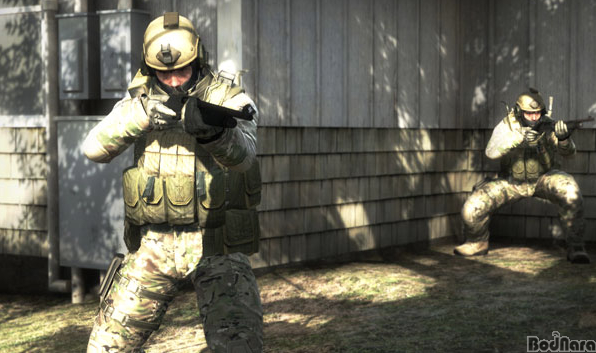

9. Counter-Strike: Global Offensive
카운터-스트라이크: 글로벌 오펜시브는
히든패스 엔터테인먼트
와
밸브 코퍼레이션
이 개발한 온라인 1인칭 슈팅 게임이다.
클래식 버전(카운터-스트라이크: 소스)의 모드와 맵, 캐릭터를 개조하여 만든 것이 특징적이다.

Please enable JavaScript to view the
comments powered by Disqus.